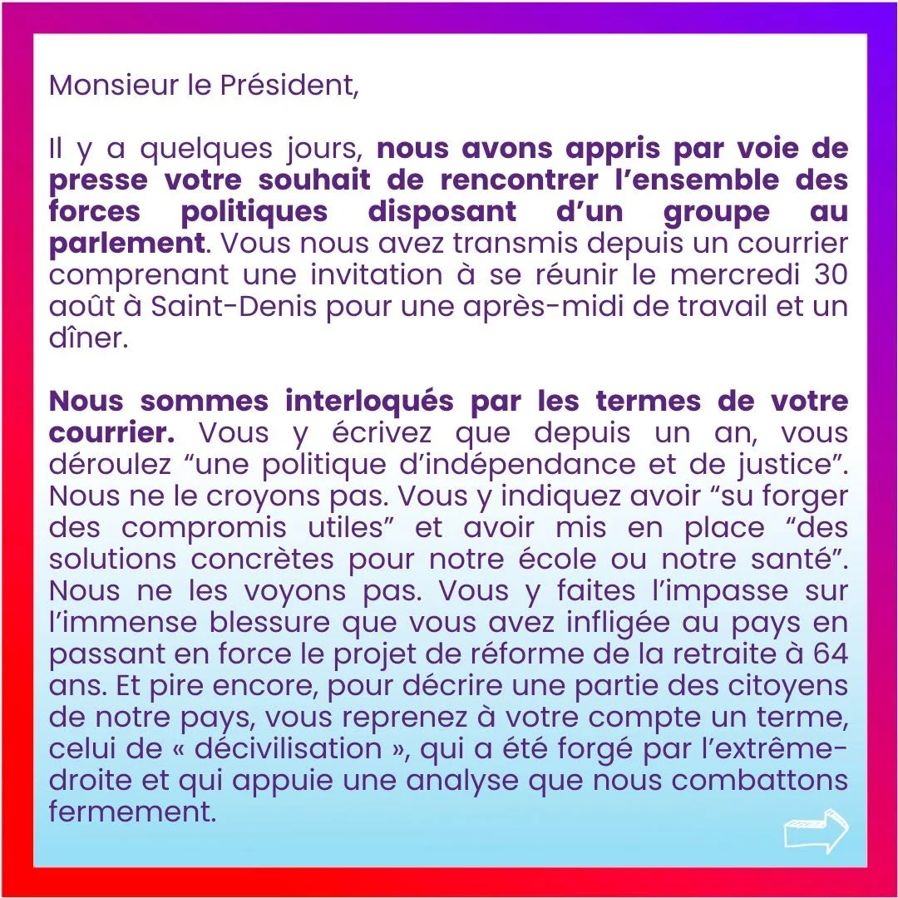
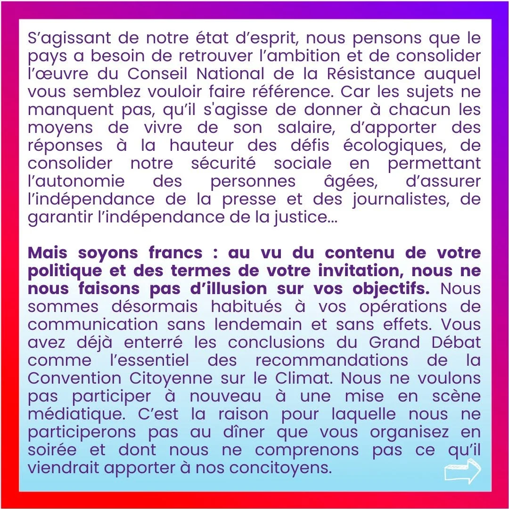
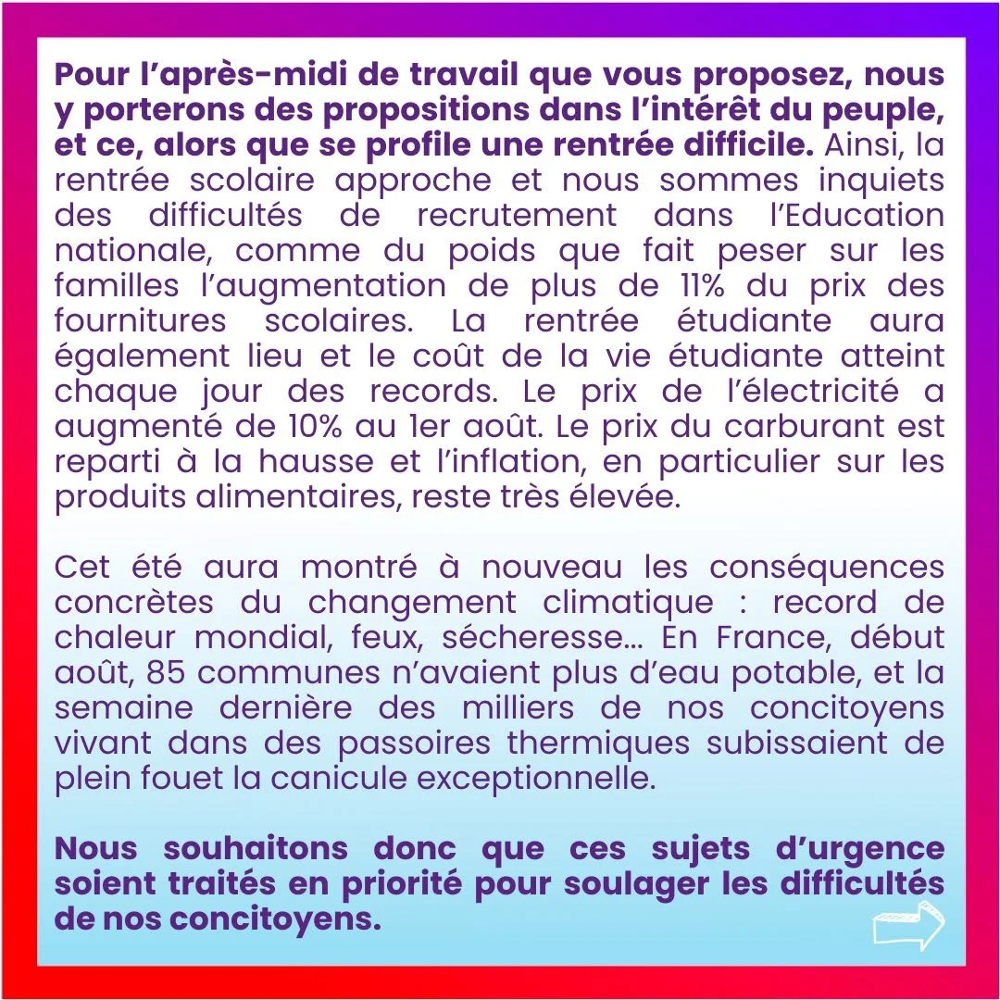
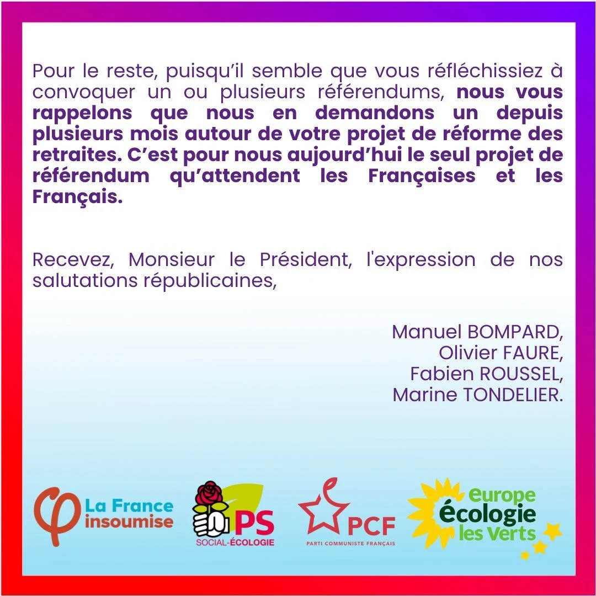

Publication relayée par le PCF 79
La réponse des responsables de la NUPES à l’invitation d’Emmanuel Macron
Date de mise à jour indiquée par Facebook · 29 août 2023
Texte de la publication · PCF national
Dîner de rentrée à l’élysée : réponse de la NUPES à Emmanuel Macron
Monsieur le Président,
Il y a quelques jours, nous avons appris par voie de presse votre souhait de rencontrer l’ensemble des forces politiques disposant d’un groupe au parlement. Vous nous avez transmis depuis un courrier comprenant une invitation à se réunir le mercredi 30 août à Saint-Denis pour une après-midi de travail et un dı̂ner.
Nous sommes interloqués par les termes de votre courrier. Vous y écrivez que depuis un an, vous déroulez “une politique d’indépendance et de justice”. Nous ne le croyons pas. Vous y indiquez avoir “su forger des compromis utiles” et avoir mis en place “des solutions concrètes pour notre école ou notre santé”. Nous ne les voyons pas. Vous y faites l’impasse sur l’immense blessure que vous avez infligée au pays en passant en force le projet de réforme de la retraite à 64 ans. Et pire encore, pour décrire une partie des citoyens de notre pays, vous reprenez à votre compte un terme, celui de « décivilisation », qui a été forgé par l’extrême-droite et qui appuie une analyse que nous combattons fermement.
S’agissant de notre état d’esprit, nous pensons que le pays a besoin de retrouver l’ambition et de consolider l’œuvre du Conseil National de la Résistance auquel vous semblez vouloir faire référence. Car les sujets ne manquent pas, qu’il s'agisse de donner à chacun les moyens de vivre de son salaire, d’apporter des réponses à la hauteur des défis écologiques, de consolider notre sécurité sociale en permettant l’autonomie des personnes âgées, d’assurer l’indépendance de la presse et des journalistes, de garantir l’indépendance de la justice...
Mais soyons francs : au vu du contenu de votre politique et des termes de votre invitation, nous ne nous faisons pas d’illusion sur vos objectifs. Nous sommes désormais habitués à vos opérations de communication sans lendemain et sans effets. Vous avez déjà enterré les conclusions du Grand Débat comme l’essentiel des recommandations de la Convention Citoyenne sur le Climat. Nous ne voulons pas participer à nouveau à une mise en scène médiatique. C’est la raison pour laquelle nous ne participerons pas au dı̂ner que vous organisez en soirée et dont nous ne comprenons pas ce qu’il viendrait apporter à nos concitoyens.
Pour l’après-midi de travail que vous proposez, nous y porterons des propositions dans l’intérêt du peuple, et ce, alors que se profile une rentrée difficile. Ainsi, la rentrée scolaire approche et nous sommes inquiets des difficultés de recrutement dans l’Education nationale, comme du poids que fait peser sur les familles l’augmentation de plus de 11% du prix des fournitures scolaires. La rentrée étudiante aura également lieu et le coût de la vie étudiante atteint chaque jour des records. Le prix de l’électricité a augmenté de 10% au 1er août. Le prix du carburant est reparti à la hausse et l’inflation, en particulier sur les produits alimentaires, reste très élevée.
Cet été aura montré à nouveau les conséquences concrètes du changement climatique : record de chaleur mondial, feux, sécheresse... En France, début août, 85 communes n’avaient plus d’eau potable, et la semaine dernière des milliers de nos concitoyens vivant dans des passoires thermiques subissaient de plein fouet la canicule exceptionnelle.
Nous souhaitons donc que ces sujets d’urgence soient traités en priorité pour soulager les difficultés de nos concitoyens.
Pour le reste, puisqu’il semble que vous réfléchissiez à convoquer un ou plusieurs référendums, nous vous rappelons que nous en demandons un depuis plusieurs mois autour de votre projet de réforme des retraites. C’est pour nous aujourd’hui le seul projet de référendum qu’attendent les Françaises et les Français.
Recevez, Monsieur le Président, l'expression de nos salutations républicaines,
Manuel Bompard, Olivier Faure, Fabien Roussel, Marine Tondelier.




Sources
PCF national · publication relayée par le PCF 79 · bibliothèque Facebook · AR-0002-FB-01596
À lire aussi · Face au budget d’austérité, le PCF propose un pacte d’avenir